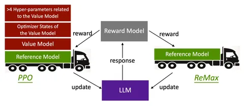

Сегодняшняя статья — об интересном методе обучения с подкреплением, который называется ReMax. Авторы предлагают его как замену популярному алгоритму Proximal Policy Optimization (PPO).
ReMax основывается на алгоритме обучения с подкреплением, который называется REINFORCE — отсюда и приставка Re. В REINFORCE, в отличие от PPO, нет value-модели. Она выступает в роли бейзлайна для снижения дисперсии оценки градиента и представляет собой среднюю награду, которую наберёт генератор, если будет отвечать на конкретный запрос.
Вместо отдельной value-модели в ReMax предлагают использовать другой бейзлайн — то, сколько награды набирает greedy-генерация обучаемой моделью на запросе. Отсюда окончание Max. Такой бейзлайн тоже отлично подходит с точки зрения теории, и не требует хранения дополнительной модели в памяти — авторы сообщают, что снижение потребления GPU-памяти составляет 46%. А поскольку число моделей, необходимых алгоритму алайнмента, уменьшилось, то уменьшилось и число гиперпараметров, которые нужно подобрать.
Использование ReMax для обучения модели Mistral-7B показало значительные улучшения. Модель достигла 94,78% успеха на leaderboard AlpacaEval и установила новый стандарт для моделей с 7 миллиардами параметров. Эти результаты демонстрируют, что ReMax может стать отличной альтернативой PPO для RLHF-задач, значительно сокращая вычислительные затраты и повышая эффективность обучения крупных языковых моделей.
Разбор подготовил
Душный NLP
